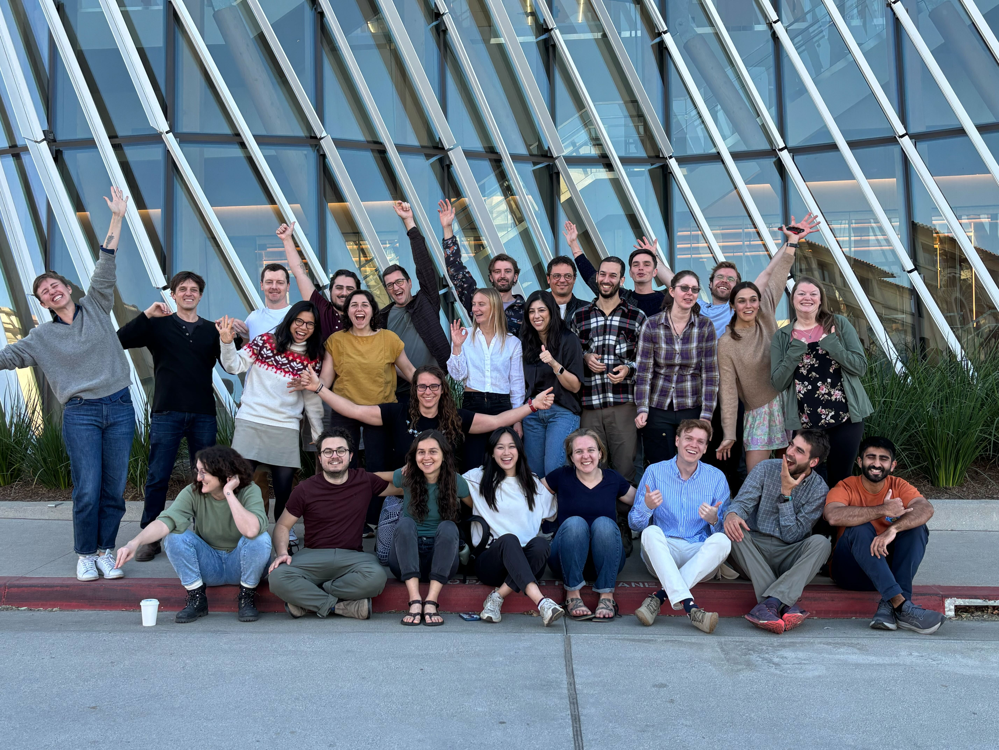
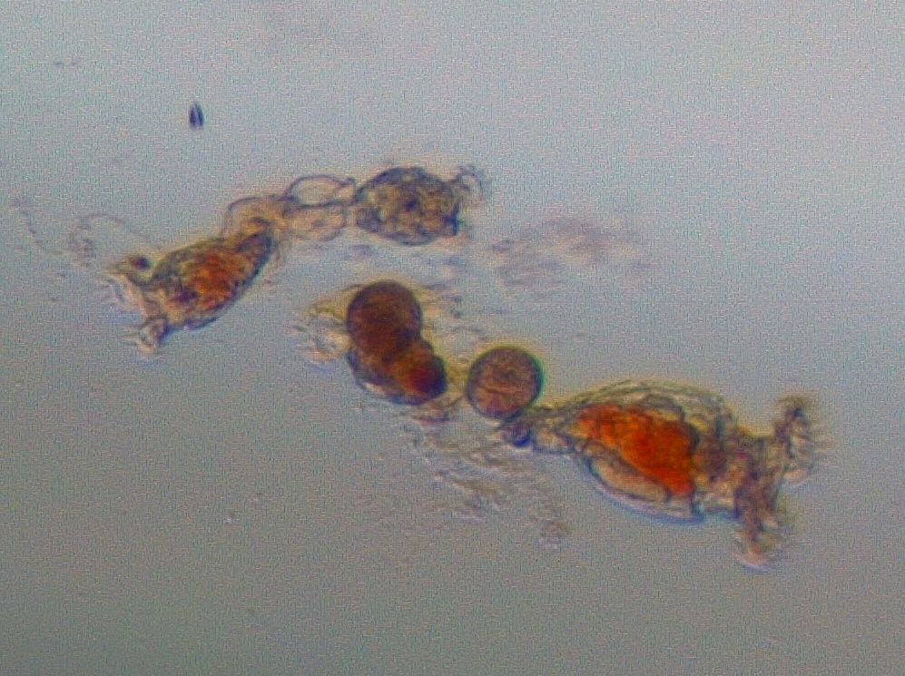
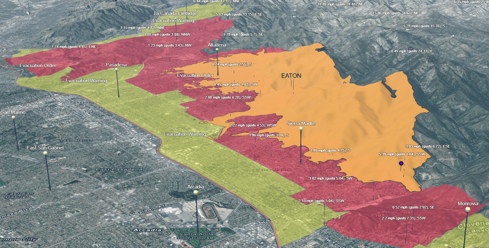
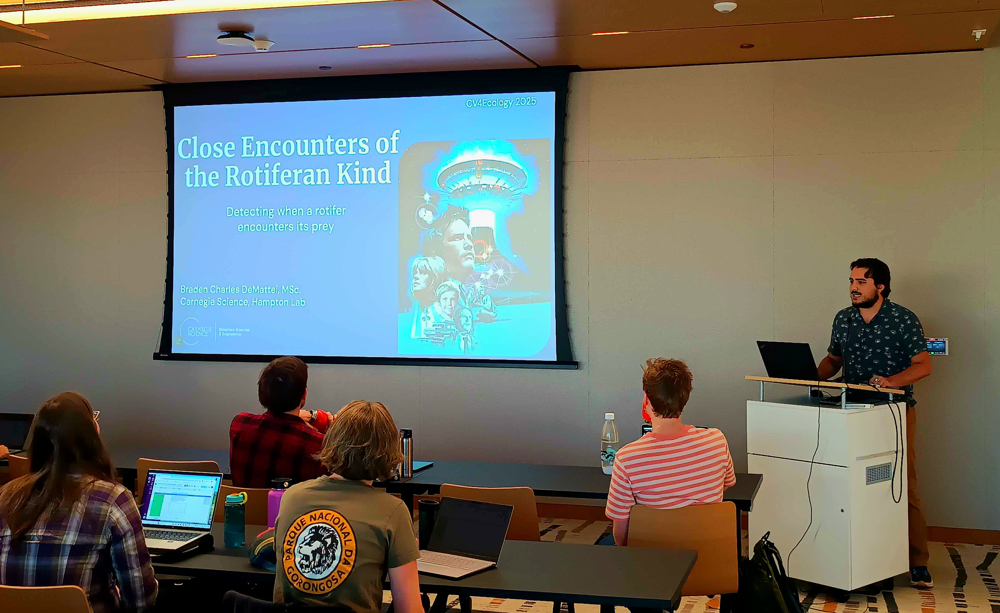

Workshop Reflections: Computer Vision 4 Ecology

At the beginning of this year, I had the opportunity to attend the Computer Vision 4 Ecology (CV4E) workshop hosted at Caltech by Dr. Sara Beery (MIT), Dr. Eric Orenstein (National Oceanography Center) and Dr. Pietro Perona (Caltech). Over three weeks in January, myself and an international group of early-career ecologists were taught the fundamentals of computer vision & machine learning (CVML), the different model architectures that were at our disposal, and how to incorporate what we were taught into our own projects. My project, “Close Encounters of the Rotiferan Kind”, focused on automating video analysis using an image-classification model (YOLOv5) to detect when a stationary, predatory rotifer (Philodina sp.) encounters its motile, algal prey (Cryptomonas erosa). The road to completing this project not only involved months of preparation but also resilience and tenacity in the face of the tragic Eaton Fire.
Prior to my application to CV4E, I had been culturing two species of Synchaeta: Synchaeta sp. and Synchaeta tremula. Interestingly, while the Synchaeta sp. was a purely motile species, S. tremula had the ability to secrete mucus strands with which it could anchor its eggs and itself while it grazed. This tendency to anchor while feeding made it much easier to record an individual’s hunting efforts in its entirety without having to refocus a microscope or move a petri dish to keep the individual in view. Combining this stationary behavior with the motile alga, Cryptomonas erosa, facilitated a setup that would allow for a more thorough analysis of the predator’s hunting abilities. The idea was this: wait for the S. tremula individual to anchor, introduce the algae, and film the rotifer until it un-anchored to find a new feeding spot. The video would then be annotated to detect and classify the algae and the rotifer, as well as to classify the rotifer’s predatory behavior using established behavior scoring methods (Encounter, Attack, Reject, Ingest, and Escape). All of this would be accomplished prior to the workshop, where I would then work with the instructors to adapt and train machine learning models to automate the process. As the process of preparing for the workshop progressed, it would become apparent that this was all much easier said than done, both due to worst-case scenario setbacks and technical limitations.
Preparation
I found out that I was accepted into the workshop while on vacation in New York City with my then-girlfriend-now-wife in May 2024. We and an old college friend of mine were sitting in the audience of an off-broadway murder mystery play when I received the message that I would be attending the workshop in January 2025. A few days later, still in NYC, I got a message from Stephanie who had been tending to my rotifers in my absence letting me know that all of the S. tremula cultures had begun to crash. As you can imagine, this was as far from ideal as one can get. My stress levels were rising for two major, interconnected reasons: the feasibility of the project hinged on having a stationary rotifer species and the only other rotifer species I had cultures of were purely motile. When I got back to work, I immediately began trying to figure out how to make the Synchaeta sp. individuals stationary so that I could begin filming. This was a short lived process as my Synchaeta sp. cultures also began to crash shortly after and were completely decimated a week or so later. It seemed my enthusiasm about this workshop ended as soon as it began, but I do not give in to worry and despair so easily.
With an empty, rotifer-less lab, I ventured back to the ponds of Caltech looking for any signs of S. tremula. I searched sample after sample of concentrated pond water and found nothing but cladocerans, protists, and all manner of odd, alien looking creatures. Right as all hope seemed lost, I looked at one more sample of pond water and, during this particular search, a leaf had made it into the petri dish from the sample bottle. It was a situation where if I had blinked or focused the microscope at the wrong time, I would have missed it. There she was, anchored to the bottom of the leaf: a single rotifer with its unmistakeable corona fully extended, creating a feeding field. It took me twenty minutes to dislodge her safely from that leaf with my glass pipette and transferred into a fresh, new culture. She was not the Synchaeta tremula I was looking for, but she anchored to eat and that was all I cared about in that moment. While I cannot entirely remember, I believe that all occurred on a Friday, so I had to wait over the weekend to see if she would survive. That following Monday, I put my bags at my desk and immediately set up the culture under the stereoscope. Not only did she survive, she had reproduced–one had become two. I was ecstatic, immediately messaging Stephanie with my updates. Those two individuals in one petri dish eventually grew to seven petri dishes with >30 individuals in each dish.

Our next task was to identify this species. For the longest time, we believed it to be a monogonastic rotifer of the genus Rhinoglena. However, once I was able to successfully isolate the trophus under a higher powered microscope, it was clear that these rotifers were not monogonants at all, but were in fact bdelloids. We would later further identify them down to the Philodinidae family using a morphological key, and even further down to the Philodina genus by comparing the trophus to Philodinidae trophi. These Philodina sp. individuals behaved similarly to S. tremula, aside from the mucus thread. They freely swim until they find a suitable spot and substrate to anchor onto with their foot and begin feeding. Once an individual anchors, and they find the spot to be sufficient, it will begin to lay eggs, creating small groupings of individuals (or ‘complexes’ as I unofficially labeled them). While they mainly prefer to anchor to the bottom of the petri dish, I have observed and documented many individuals anchoring to the sides of the dishes, to loose threads that find their into the culture, and even the surface tension of the water!
Having a healthy amount of Philodina sp. to work with, I got started on filming the videos that would comprise the dataset I would take with me to the workshop. At this time I began thinking of how I would realistically annotate the rotifers’ feeding behavior and that is when the project’s biggest technical limitation reared its ugly head. I realized that training a model to identify and classify behaviors, on top of identifying and classifying between rotifer and alga, was too complex a task for my first foray into computer vision. I decided to boil the problem down into a simpler, more manageable form: creating a model that can detect when a rotifer encounters its prey. As simple as it sounds, this was a good starting point for a computer vision neophyte.
With this new goal in mind, I set about annotating the videos in Label Studio–an open source video+image annotation software–with the invaluable help of our two summer interns, Lia and Katelyn. Over the course of a few days, we annotated every C. erosa and Philodina sp. frame by frame for ~10,000 frames across seven videos. Later on I would decide to record more videos before the workshop which would up the frame count to 15,000. Once the last annotation was saved, the preparation for the workshop was done and the real work was just about to begin.
Workshop
The night before and the morning of the workshop’s first day, my stomach was in knots. Were my python skills sharp enough? Did I get enough data? What if my annotations were messed up? Is my project good enough? My mind raced with these questions and insecurities. My one comfort was that my office was just a two minute walk from where the workshop was to be held, so if something catastrophic happened to my data, I could pull a few long nights in the lab to make up the loss. I got to campus early, parked in my usual spot, and made my way to my office to settle my nerves in a familiar environment. But the time came, as it always does, to put on a brave face and head over to the Resnick Sustainability Institute to face one of my biggest fears: meeting new people.
My CV4E 2025 cohort was a diverse group of international early career ecologists with traveling from as close as Palo Alto, California and as far as Israel and Germany. I was used to sitting in an office by myself, so it was a nice change of pace to be around so many other early career folks. We started that first day with instructor introductions and short introductory presentations for each project. Our first two days were then a crash course on remote workflows, computer vision terminology, and how to decide on code bases and model architectures.
The latter half of those first two days was independent work time where we split up into the subgroups we had been assigned months earlier. It was at the end of the first day’s work time that my heart dropped; I realized that the mp4 files I decided to use were not lining up with my annotations. After some trial and error, it turned out that I needed to use my much larger AVI files as the mp4 files were somehow exported at a lower frame rate. An annoying problem to be sure, but one with an easy solution. At the end of the second day, I stayed on campus later into the evening to re-export the videos into the correct file format. That would be the last time I would step on the Caltech campus for two weeks.
Driving home that night was a terrifying experience. The Santa Ana winds were blowing harder than I had ever experienced, and I could feel my car fighting with me to stay pointed straight. The 210 freeway that I always take home came to a dead stop, so I decided to take surface streets home. I exited onto a pitch black street in Altadena. The power had gone out from the winds and debris littered the streets. Waiting my turn at dead traffic light, a firetruck raced through the intersection heading deeper into neighborhoods. Little did I know at that time that I witnessed the first of many brave firefighters rushing to fight the blaze that would turn into one of the deadliest in Los Angeles history.

The next day, the group chat the cohort used to communicate was a constant stream of worried and concerned messages. The motel my new friends were staying at was on the edge of an ‘Evacuation Order Zone’, right on the other side of the freeway from the fire. I decided that day to join the workshop remotely, as my and my wife’s house was on the edge of an ‘Evacuation Warning Zone’ and the winds were still howling. The air was thick with smoke and the orange light that illuminated the sky looked like we had been transported to the middle of Mordor. A townhall was convened and it was decided that it was no longer safe for the cohort to stay at the motel and that the workshop would move to UC Santa Barbara until the fire was more under control. I elected to stay as I did not want to leave my wife alone to wrangle our 3 cats in the event they needed to evacuate.
The next two weeks were incredibly productive, albeit lonely. The most contact I would have with my cohort would be during the couple hours of lectures we had in the morning. My afternoons would mostly consist of quiet working time writing Python code, addressing frustrating errors that seemed unsolvable, and reading the cohort group chat to see what fun activities they were up to up North while I was stuck inside nervously refreshing the Watch Duty app for updates.
Despite the worry and the roadblocks, progress was made and lessons were learned slowly but surely. The first victory was training my first YOLOv5 model, which was able to detect and classify both rotifers and algae. The second, which took a week on its own to figure out, was implementing a tracking algorithm into the YOLOv5 inference script so that individual algae’s distances from the rotifer could be tracked. Incorporating the Simple Online and Realtime Tracking model (SORT) into my workflow took many iterations of trial and error, but eventually it worked! By the end of the second week, I had a model that could not only detect and classify rotifers and algae, but could also assign each an ID number that would allow the model to track each individual’s position.
By the time the 3rd week had begun, the Eaton Fire had been contained to manageable enough levels that the air quality had significantly improved, allowing the workshop to travel back down to Caltech for its final week. While the fire was managed, the smell of smoke lingered in the air and everyone wore masks to protect themselves from the toxic ash that had been blown onto campus. Despite everything, it was nice to be around and work with people in person again as we entered the final stretch.

My final goal for that week was to adjust the inference script further to measure the normalized distance between a tracked alga and the rotifer, compare it to a threshold, have a bounding box be generated around the two interacting individuals if its crossed, and then enter the time stamp, frame number, & object IDs into an ‘Encounter Log’ spreadsheet for later review. It took three days of trial and error, but the feeling when that first successful video and spreadsheet were outputted was indescribable. After months and months of preparation, and three turbulent, stressful weeks of coding, I had achieved what I had set out to accomplish during the workshop. The last couple days were mostly preparing a project presentation to give to the wider group, which happened to be the first presentation I had given in 5 years.
The experience of attending the CV4E 2025 workshop was an absolutely wonderful opportunity that comes around once in a lifetime. While I successfully created my first Computer Vision model, the work is far from over. Looking at the error graphs from that initial run showed that more training data was needed. Not only that, but this work will hopefully be built on as I enter the next phase of my career as a PhD student at The Ohio State University studying under Dr. Tanya Berger-Wolf and Dr. Jim Hood. This foray into the integrated world of computer vision and ecology has only fueled my excitement to further develop this interdisciplinary pairing. With 20 more videos and ~55,000 more frames in hand, there is more news to come.
An extra big thank you to the CV4E instructors, my fellow workshop students, and Stephanie for supporting me in this venture. I quite literally could not have done any of this without their guidance, help, and moral support.